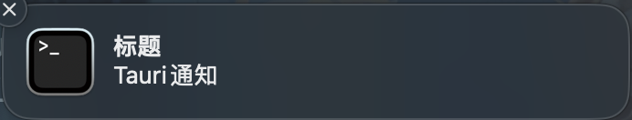

Tauri: 使用通知提高用户参与度
文章目录
前言
在这篇文章中，我们将讨论如何使用 Tauri 框架来发送通知。通知是让你的应用与用户交流的重要方式之一，可以提高用户参与度和改善用户体验。
通知的 API 同样有两套，分别来看下
Rust
首先，我们来看看如何在 Rust 中发送通知。 Tauri 提供了一个简单的方式来完成这个任务。以下是一个示例代码片段，展示如何发送通知：
|
|
这段代码通过 Tauri 框架创建了一个通知，设置了标题和内容，然后显示通知。这使你能够在你的应用中轻松地发送通知消息。

适配 Windows 7
如果要适配 Windows 7 要使用 notify 而不是 show
|
|
JS
在 JS 中同样也支持通知，来看下如何使用
|
|
显示效果和上面一样，如果想要配置标题和内容可以像下面这样使用
|
|
配置
和选择文件一样，要想正常使用需要在 src-tauri/tauri.conf.json 中配置 notification 才能正常使用，如下所示
|
|
总结
今天我们讲了在 Tauri 中分别使用 Rust 和 JS 来发送通知的功能，还是非常方便的。
通知能够在一些关键的情况下提升用户体验，用起来。